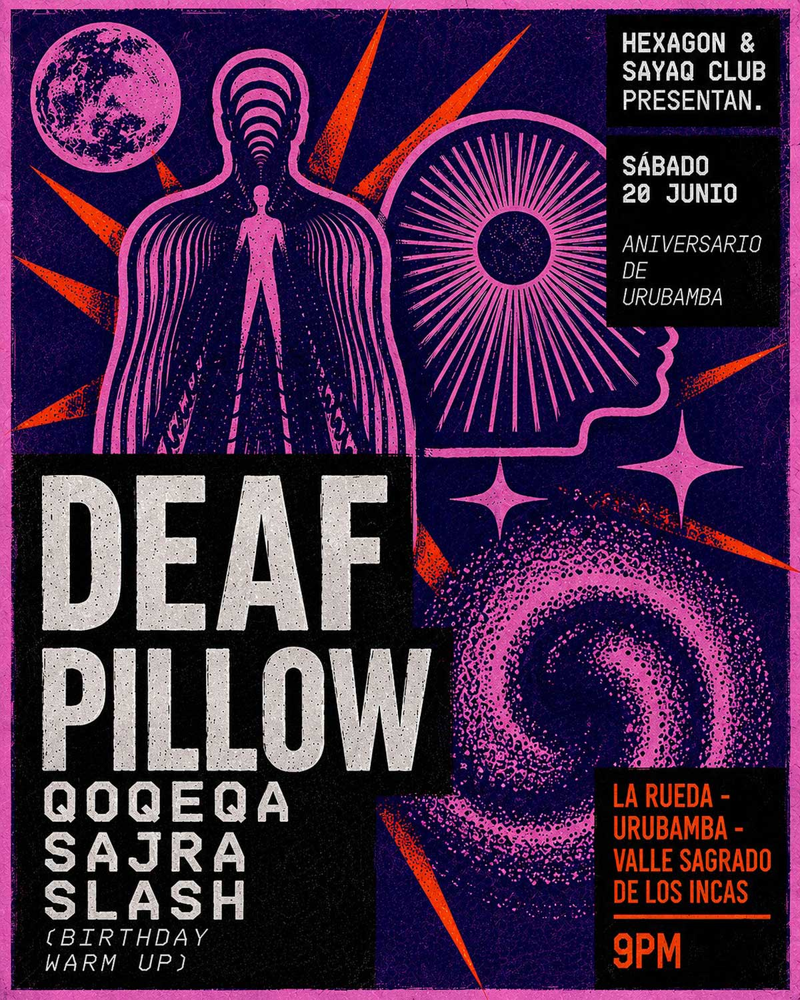

DEAF PILLOW
fecha: 20/06/26 hora: 9pm
lugar: La Rueda Restobar,
Av. Mariscal Castilla 645, Urubamba, Valle Sagrado de los Incas


🌑 HEXAGON & SAYAQ CLUB presentan: DEAF PILLOW 🌑
Este sábado recibimos en Urubamba a Deaf Pillow, el proyecto liderado por Rodrigo Lozano, DJ y selector con una sólida trayectoria dentro de la escena electrónica peruana.
Una propuesta sonora profunda e hipnótica que ha recorrido clubes, festivales y espacios alternativos del país, consolidándose como una referencia para los amantes de la música electrónica de vanguardia.
Lo acompañan QOQEQA, SAJRA y SLASH (Birthday Warm Up) en una noche especial por el Aniversario de Urubamba.
📍 La Rueda Restobar – Urubamba
🗓️ Sábado 20 de junio
🕘 9:00 PM
🎟️ Preventa: S/20
🎟️ Puerta: S/30
📩 Entradas por DM o vía WhatsApp al 958890697.
Gracias al support de @vive.con.esencia
#SayaqClub #Hexagon #DeafPillow #Urubamba #ValleSagrado Techno ElectronicMusic Cusco AniversarioDeUrubamba
LINE-UP:
Deaf Pillow
Qoqeqa
Sajra
Slash